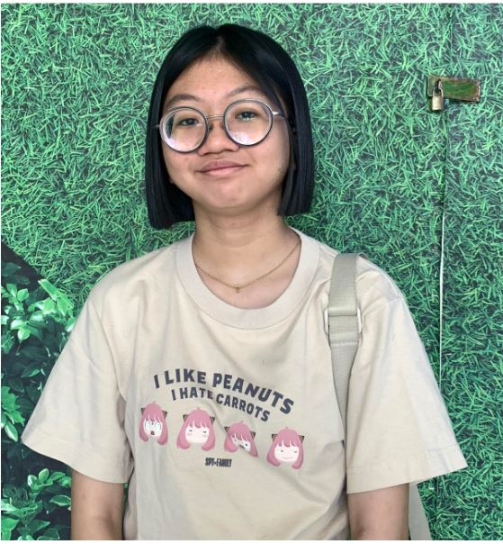

Meet Theana Velasco
As the founder of Grumble, Theana is dedicated to creating a space where people can unleash their frustrations and experience the liberating power of letting go. With a background in psychology, she understands the importance of stress relief in our fast-paced lives.
A Passion for Healing Through Fun
After witnessing the rising levels of stress and anxiety in friends and family, Theana wanted to create an innovative outlet that combined therapy and entertainment. Inspired by the idea that sometimes, breaking things can help us heal, she set out to design a unique environment where guests could feel safe to express their emotions.
The Vision Behind Grumble
Theana believes that everyone deserves a space to decompress and find relief from life’s pressures. Her vision is to make Grumble a welcoming sanctuary for individuals and groups to come together, share laughter, and experience the cathartic joy of smashing things.
When not running the rage room, Theana enjoys listening to music, playing video games, and spending time with her family, all of which contribute to her understanding of what it means to balance stress with joy.
Join Us in Breaking Free!
Theana invites you to visit Grumble and discover the exhilarating release that comes from breaking away from everyday stress. Together, let's smash away our worries and embrace a more joyful, carefree life!